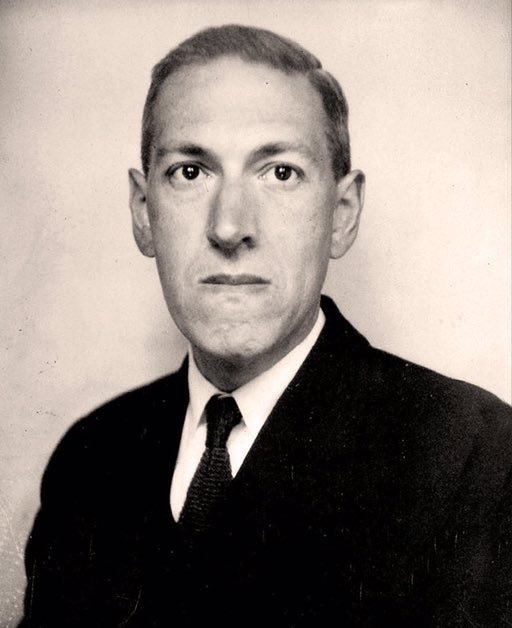
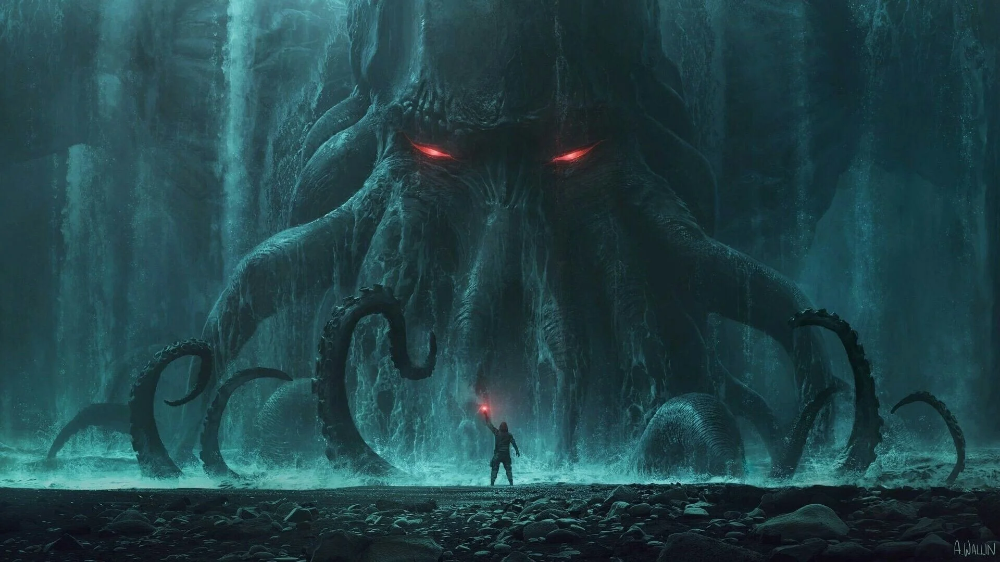
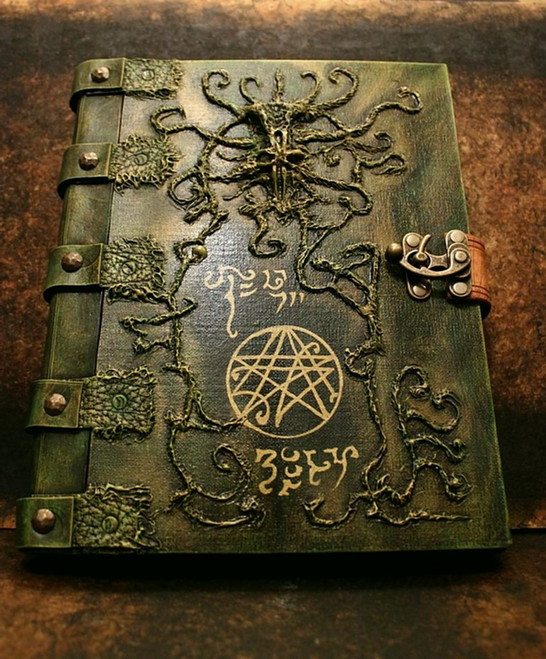
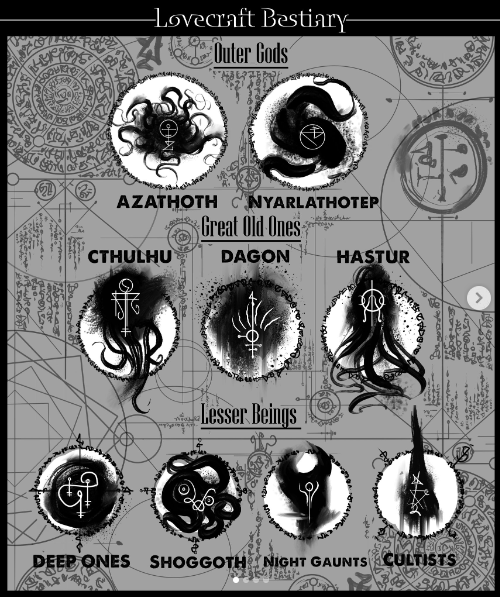

His life
Lovecraft was born on August 20th, 1890, in Providence, Rhode Island (USA). He died in the same city on March 15th, 1937, at only 46 years old.
He lived a modest life and published his stories mostly in cheap magazines. During his lifetime, almost nobody knew his name.

A new kind of horror
Before Lovecraft, horror was mostly about ghosts, vampires and monsters. He created something new: cosmic horror. The fear comes from the size of the universe and the insignificance of humans.
He also mixed horror with science fiction, with aliens instead of demons. We go from a monster you can kill, to an unknown you cannot understand.

The Necronomicon
One of his most famous creations is a forbidden book of dark knowledge. It first appears in his story The Hound (1922).
According to Lovecraft, it was written by a "mad Arab" named Abdul Alhazred. The book does not exist, but it is so famous that many people believe it is real. It appears in many books, movies and video games.

The Cthulhu universe
- A shared universe built across his stories
- Connected elements: cosmic beings, cursed New England towns, forbidden books
- The gods are indifferent to humans: neither good nor evil
- Worshipped by secret cults
- Friends reuse it: Robert E. Howard, Clark Ashton Smith, Robert Bloch
- Name "Cthulhu Mythos": popularised by August Derleth (Arkham House, 1939)
- Groups "Outer Gods" and "Great Old Ones": classification made by later authors
- "Lovecraftian" = any story with a cosmic horror atmosphere

Outer Gods
Great Old Ones
Fictional places
Arkham, Innsmouth, Dunwich, Miskatonic University
His influence
Stephen King says Lovecraft is one of his major influences. The link is clear in King's stories about the fear of the unknown and cursed small towns. Cthulhu has become a pop culture icon, even for people who have never read Lovecraft.
The paradox: he died poor and almost unknown, and today he is one of the most influential authors of the genre. In 2005, his works were published in the Library of America.